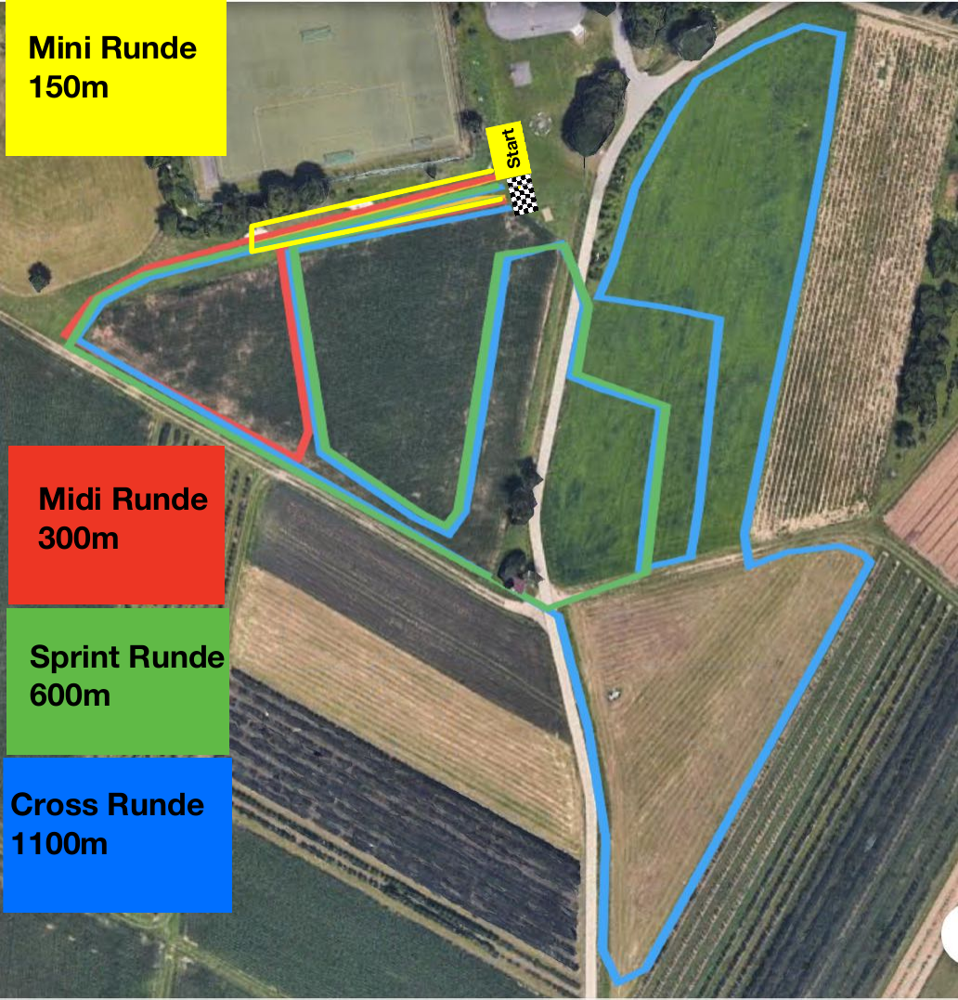
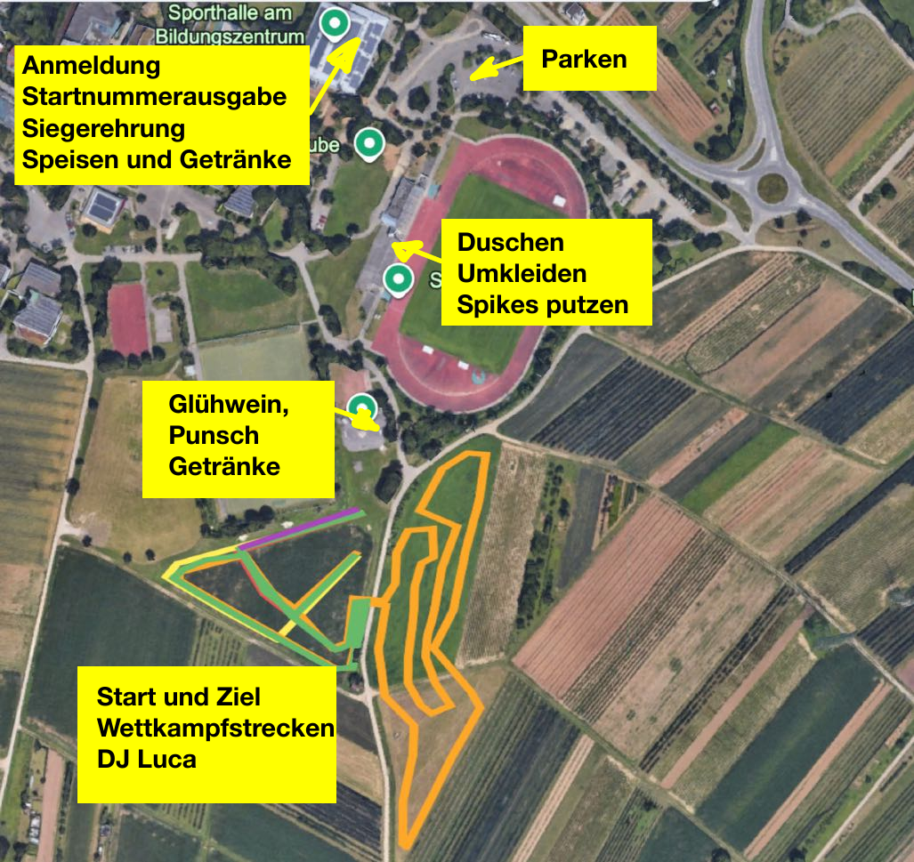
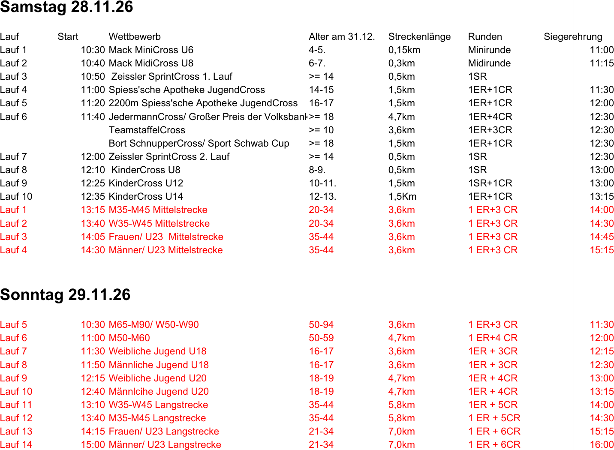
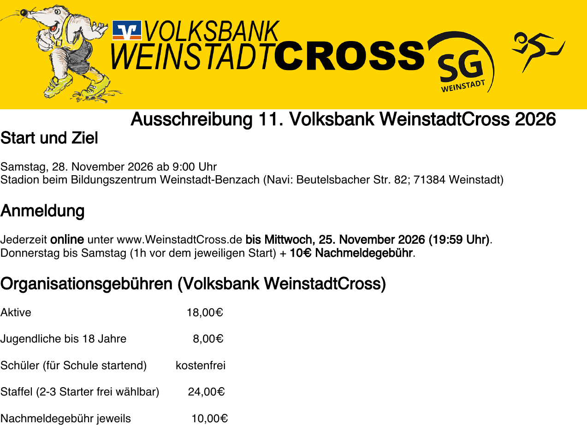

Samstag, 28. und Sonntag, 29. November 2026 · Bildungszentrum Weinstadt-Beutelsbach — Veranstalterseite
| Veranstaltung | 11. Volksbank WeinstadtCross 2026 |
| Besonderheit | Im Rahmen des WeinstadtCross finden die Deutschen Meisterschaften im Crosslauf statt, dazu der Deutsche Cross Cup und die 7. Betriebssportmeisterschaften (BWBV) |
| Termin | Samstag, 28.11.2026 ab 9:00 Uhr, DM-Langstrecken am Sonntag, 29.11.2026 |
| Ort | Stadion beim Bildungszentrum Weinstadt-Beutelsbach, Beutelsbacher Str. 82, 71384 Weinstadt |
| Anmeldung | Online über weinstadtcross.de bis Mittwoch, 25.11.2026, 19:59 Uhr |
| Nachmeldung | Donnerstag bis Samstag, jeweils bis 1 Stunde vor dem Start, +10 € Nachmeldegebühr |
| Startgeld | Aktive 18 €, Jugendliche bis 18 Jahre 8 €, Schüler (für die Schule startend) kostenfrei, Staffel 24 € |
| Starterpaket | Inklusive WeinstadtCross-T-Shirt, solange der Vorrat reicht |
| Zeitnahme | SH Running, Transponder in der Startnummer integriert, Ergebnisse abends bei RaceResult |
| Regelwerk | DLV-Satzungen, Deutsche Leichtathletik-Ordnung, DLV-Anti-Doping-Code, Internationale Wettkampfregeln |
| Wetter | Die Veranstaltung findet bei jeder Witterung statt. |
| Wertung | 1. Platz | 2. Platz | 3. Platz |
|---|---|---|---|
| 6.400 m Aktive / U23 (m/w) | 120 € | 80 € | 50 € |
| 6.400 m U20 (m/w) | 120 € | 80 € | 50 € |
| 2.100 m U18 (m/w) | 120 € | 80 € | 50 € |
| 2.100 m U16 (m/w) | 120 € | 80 € | 50 € |

| Distanz | Zusammensetzung | rechnerisch |
|---|---|---|
| 1,5 km | 1 ER + 1 CR | 1.400 m |
| 3,6 km | 1 ER + 3 CR | 3.600 m |
| 4,7 km | 1 ER + 4 CR | 4.700 m |
| 5,8 km | 1 ER + 5 CR | 5.800 m |
| 7,0 km | 1 ER + 6 CR | 6.900 m |
| Charakter | Klassischer Crosslauf über Wiesen, Äcker und Feldwege zwischen den Rebhängen unterhalb des Stadions |
| Untergrund | Überwiegend Grünland und offene Ackerflächen, dazwischen ein befestigter Wirtschaftsweg, der die Runde quert |
| Kein Asphalt | Die Runden liegen komplett außerhalb der Straßen, Start und Ziel liegen auf der Wiese unterhalb des Sportgeländes |
| Spikes | Der Veranstalter richtet eine Station zum Spikes putzen ein. Deutlicher Hinweis darauf, dass Spikes hier Standard sind. |
| Jahreszeit | Ende November. Nasser, weicher, teils matschiger Boden ist einzukalkulieren, gelaufen wird bei jeder Witterung. |
| Höhenprofil | Nicht veröffentlicht. Das Gelände fällt vom Stadion zu den Feldern hin ab, die Runde enthält also Wellen, aber keine langen Anstiege. Einschätzung |


| Adresse | Stadion beim Bildungszentrum Weinstadt-Beutelsbach, Beutelsbacher Str. 82, 71384 Weinstadt |
| Parken | Am Bildungszentrum, laut Geländeplan nördlich der Sporthalle |
| Sporthalle | Anmeldung, Startnummernausgabe, Siegerehrung, Speisen und Getränke |
| Stadion | Duschen, Umkleiden und Station zum Spikes putzen |
| Start / Ziel | Südlich des Stadions auf der Wiese, dort auch Wettkampfstrecken und DJ |
| Glühweinstand | Am Weg zwischen Stadion und Start-Ziel-Bereich |
| Startunterlagen | Samstag ab 08:30 Uhr in der großen Sporthalle am Bildungszentrum |
| Nachmeldung | Donnerstag bis Samstag bis 1 Stunde vor dem jeweiligen Start, +10 € |
| Zeitmessung | Transponder ist in der Startnummer integriert, keine separate Rückgabe nötig |
| Ergebnisse | Am Abend der Veranstaltung bei RaceResult, Auswertung durch SH Running |
| Zielschluss | Für jeden Wettbewerb gibt es einen Zielschluss, danach keine Wertung mehr. Die konkreten Zeiten nennt die Ausschreibung nicht. offen |
| Urkunde | Blanko-Urkunde bei der Anmeldung, Ausdruck zu Hause |
| Haftung | Keine Haftung für Unfälle, Diebstahl oder gesundheitliche Schäden. Mit der Meldung werden DLV-Ordnungen und Anti-Doping-Code anerkannt. |
| Foto und Daten | Mit der Anmeldung wird der Veröffentlichung von Bildern und der Datenweitergabe an den Deutschen Cross Cup zugestimmt |

| Wettbewerb | Tag | Start | Distanz | Runden |
|---|---|---|---|---|
| M35 – M45 Mittelstrecke (DM) | Samstag | 13:15 | 3,6 km | 1 ER + 3 CR |
| M35 – M45 Langstrecke (DM) | Sonntag | 13:40 | 5,8 km | 1 ER + 5 CR |
| JedermannCross | Samstag | 11:40 | 4,7 km | 1 ER + 4 CR |
| TeamstaffelCross | Samstag | 11:40 | 3,6 km | 2–3 Starter |